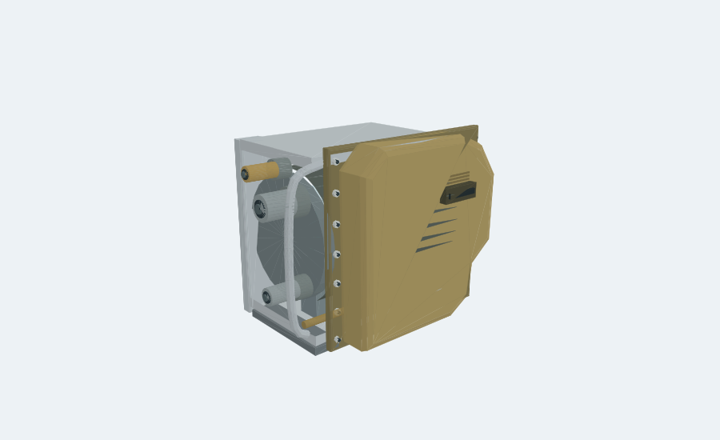

ONE MORE THING / PROOF OF CONCEPT
One More Thing.
Vectron-nahe Designstudie.
Kompakte CT-Strahler-Silhouette: bronzefarbene Formhaube, silberner Träger und seitliche Leitungen. Öffentliches Vectron-Produktbild als äußere Formreferenz; elf schematische Demo-Baugruppen. Modell, Erklärmontage, Teileliste und Zeichnungen bleiben verbunden.
Demonstrator öffnen ↓Zurück zur Gartenfackel
Vectron-nahe, unabhängige Designstudie. Kein Siemens-Produkt und keine originalgetreue Innenkonstruktion. Alle Maße, Preise und Anbieter sind erfunden. Keine Strahlenquelle, kein realer Bauplan, keine medizinische oder technische Freigabe.

JavaScript lädt das interaktive Modell. Ohne JavaScript bleiben Listen, Schemaansicht und Zeichnungen verfügbar.
Gesamtanordnung
Bauteil auswählen oder die Erklärmontage starten. Die geschlossene Hülle lässt sich ausblenden, transparent darstellen oder schematisch schneiden.
Einzelnen Schritt wählen
FUNKTIONSPRINZIP / BEWUSST SCHEMATISCH
Von Elektronen zu Röntgenstrahlung.
Ein eigener Erklärmodus, getrennt von der Montage. Farben und bewegte Punkte sind Symbole – keine sichtbaren Strahlen und keine physikalisch berechneten Bahnen.
1 · Kathode
Eine erhitzte Kathode liefert Elektronen; das elektrische Feld beschleunigt sie zur Anode. Bei der Wechselwirkung im Target entstehen Röntgenstrahlung und überwiegend Wärme. Rotation verteilt die Wärmelast auf eine größere Bahn. Der türkisfarbene Lagerfilm ist nur ein Symbol; kein reales Lagerdetail. Der Fächer zeigt nicht die gesamte räumliche Strahlungsverteilung.
Öffentliche Grundlagen, keine Vorlage für diese erfundene Geometrie: Grundlagen der Röntgentechnologie · Beispiel für Röhren mit Flüssigmetalllager. Äußere Vectron-Formreferenz siehe unten; dieses Funktionsschema zeigt keine originale Innenkonstruktion. Keine Herstellerzugehörigkeit.
01 / FIKTIVE STÜCKLISTE
Elf Baugruppen. Eine Modellquelle.
Jede Zeile führt zur Geometrie und zum zugehörigen Erklärschritt. Maßangaben in erfundenen „Demo-mm“; Materialnamen beschreiben nur die Optik.
| Pos. / Bauteil | Demo-Maß | Optik | Menge | Untersuchen |
|---|---|---|---|---|
| 01 · Silberner Montagerahmen | 303 × 296 × 189.5 | Aluminiumoptik | 1 | Beschaffung |
| 02 · Trägerstruktur (Schema) | 287.5 × 236 × 194 | Metalloptik | 1 | Beschaffung |
| 03 · Anodenteller mit Rotor | 129 × 116 × 116 | Kupfer- und Stahloptik | 1 | Beschaffung |
| 04 · Flüssigmetalllager (Symbol) | 48.5 × 59.1 × 60 | Türkise Lagerfilm-Symbolik | 1 | Beschaffung |
| 05 · Kathodenmodul | 89 × 58 × 58 | Keramik- und Metalloptik | 1 | Beschaffung |
| 06 · Röhrenhülle | 280 × 138 × 138 | Transparente Demo-Hülle | 1 | Beschaffung |
| 07 · Leitungen & Anschlüsse (Attrappe) | 158 × 256.8 × 97 | Silber- und Messingoptik | 1 | Beschaffung |
| 08 · Zylindrischer Röhrenkörper | 257 × 210 × 210 | Dunkle Metalloptik | 1 | Beschaffung |
| 09 · Fenstermodul | 66 × 23 × 14.5 | Kontrastfarbene Attrappe | 1 | Beschaffung |
| 10 · Bronzefarbene Formhaube | 308 × 300 × 65.5 | Bronze- / Messingoptik | 1 | Beschaffung |
| 11 · Runder Seitendeckel | 17.5 × 202 × 202 | Dunkle Gehäuseoptik | 1 | Beschaffung |
02 / ERFUNDENE BESCHAFFUNG
Eine Stückliste kann zur Entscheidung führen.
Diese Anbieter existieren hier nur als Beispieldatensätze. Keine Händlerlinks, Kontakte, Lagerbestände oder Bestellungen. Euro-Werte sind frei erfundene Rechengrößen.
| Bauteil | Erfundener Anbieter | Fiktiver Einzelpreis | Hinweis |
|---|---|---|---|
| Silberner Montagerahmen | POC Metallatelier | 38,00 € | Demo-Datensatz · nicht bestellbar |
| Trägerstruktur (Schema) | POC Formwerk | 54,00 € | Demo-Datensatz · nicht bestellbar |
| Anodenteller mit Rotor | POC Komponentenlabor | 210,00 € | Demo-Datensatz · nicht bestellbar |
| Flüssigmetalllager (Symbol) | POC Lagerattrappen | 125,00 € | Demo-Datensatz · nicht bestellbar |
| Kathodenmodul | POC Komponentenlabor | 140,00 € | Demo-Datensatz · nicht bestellbar |
| Röhrenhülle | POC Glasmodellbau | 165,00 € | Demo-Datensatz · nicht bestellbar |
| Leitungen & Anschlüsse (Attrappe) | POC Thermoattrappen | 85,00 € | Demo-Datensatz · nicht bestellbar |
| Zylindrischer Röhrenkörper | POC Formwerk | 110,00 € | Demo-Datensatz · nicht bestellbar |
| Fenstermodul | POC Optikattrappen | 32,00 € | Demo-Datensatz · nicht bestellbar |
| Bronzefarbene Formhaube | POC Formwerk | 62,00 € | Demo-Datensatz · nicht bestellbar |
| Runder Seitendeckel | POC Formwerk | 44,00 € | Demo-Datensatz · nicht bestellbar |
Nur Mengensumme ohne Rabatt. Versand, Bearbeitung, Steuern und reale Kosten sind nicht kalkuliert. Keine Wirtschaftlichkeitsbehauptung.
Fiktive Stückliste als JSON ↓03 / ZEICHNUNGSAUSSCHNITTE
Vom Modell zur lesbaren Ansicht.
Zwei A3-Schemablätter aus derselben Darstellungsgeometrie. Keine Fertigungszeichnungen, keine Toleranzen und keine freigegebenen Maße.


04 / WAS DER PROOF OF CONCEPT ZEIGT
Formreferenz und technische Grenzen.
Äußere Formreferenz: Siemens Healthineers Vectron. Bronzehaube, Silberrahmen und seitliche Leitungen sind visuell daran orientiert. Maße, innere Aufteilung und Montagefolge sind eigene schematische Annahmen. Keine Herstellerzugehörigkeit, keine Original-CAD-Daten.
Das öffentliche SOMATOM-Force-Whitepaper, Abb. 2 benennt ein Flüssigkeitslager im Vectron-Schema. Unsere Ringdarstellung ist kein originales Lagerdetail.
Demonstriert
Gemeinsame Modellquelle, Bauteilkontext, schrittweise Erklärbewegung, transparente Hülle, schematischer Schnitt, Ansichtslink, PNG/STL, fiktive Beschaffung und abgeleitete Zeichnungsansichten.
Bewusst nicht enthalten
Elektronenoptik, Hochspannung, Vakuumprozess, Strahlenschutz, Wärmehaushalt, Dosis, Sicherheitssysteme, Normkonformität, reale Herstellbarkeit oder Kollisionsfreigabe. Dieses Modell kann keine Röntgenstrahlung erzeugen.